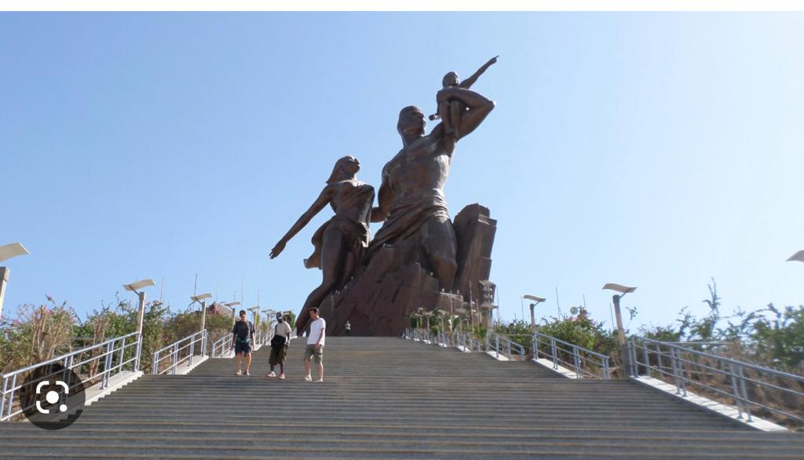
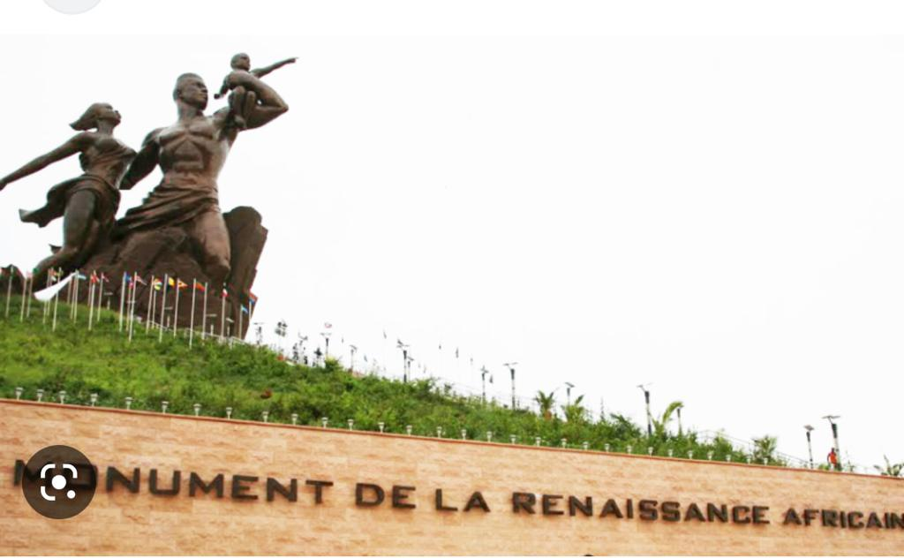
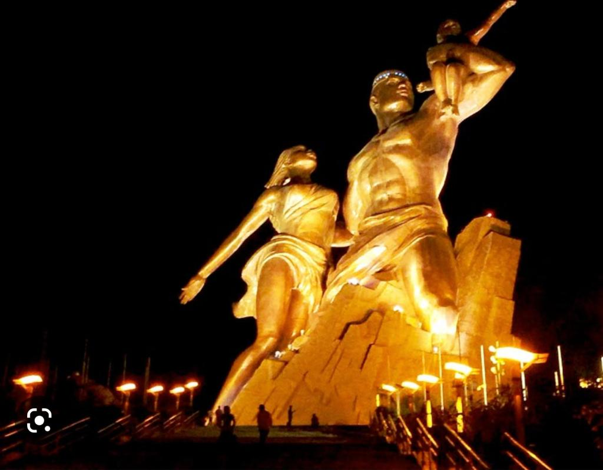
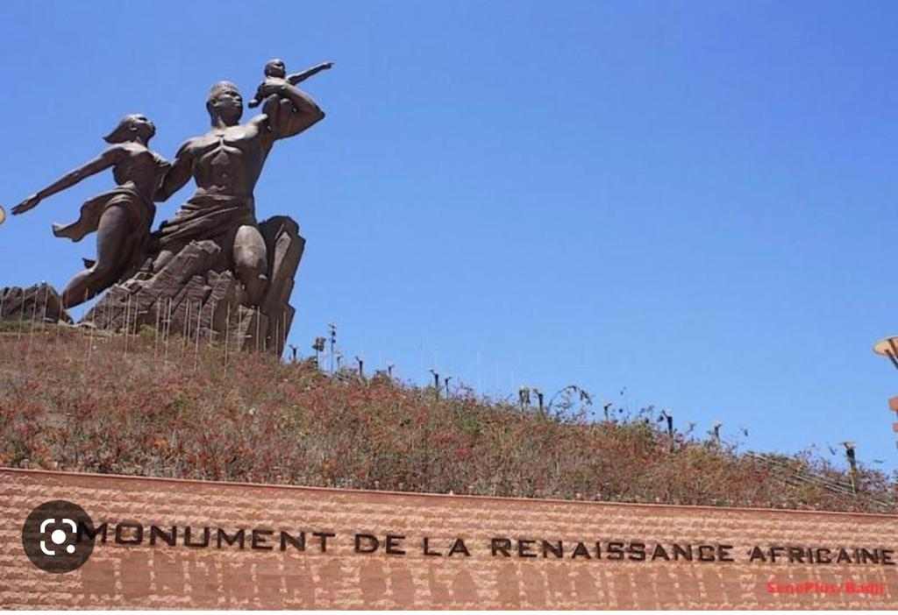
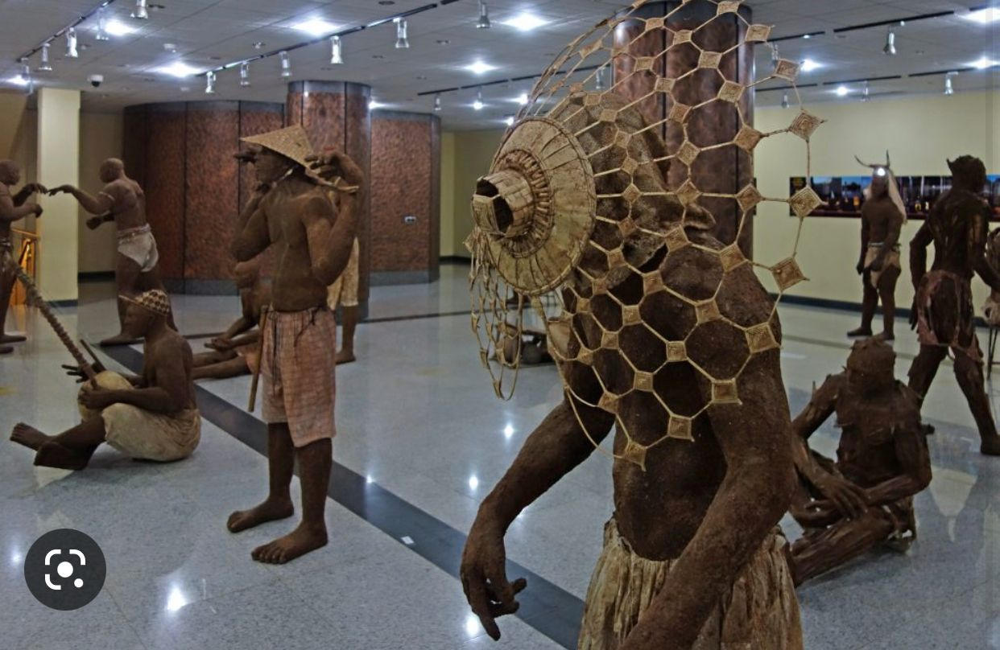
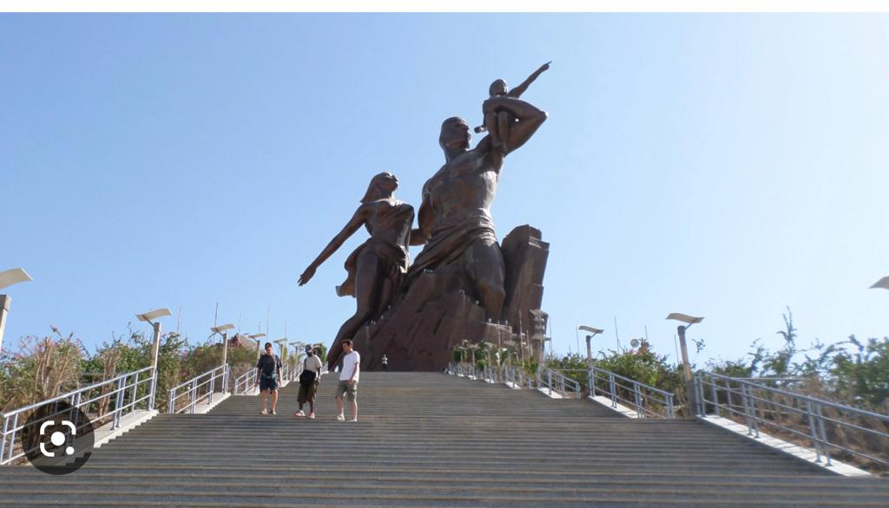
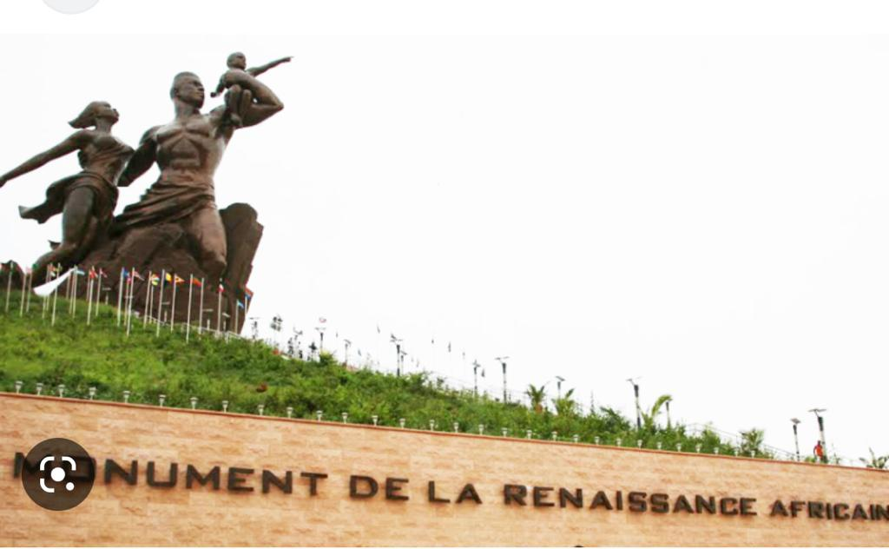
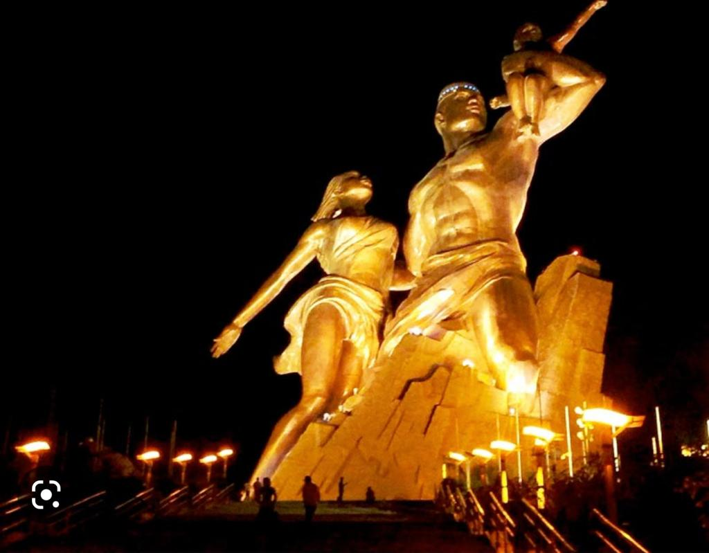
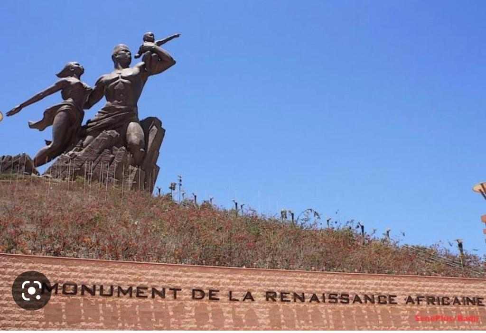
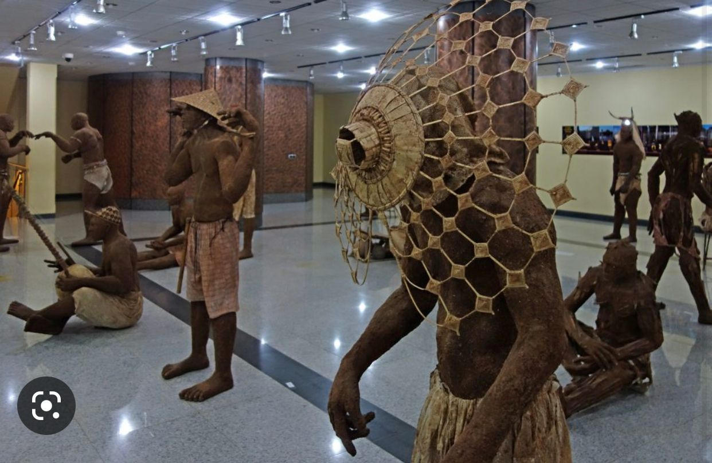

Haut de 52 mètres et réalisé en cuivre, le monument représente un homme aux muscles saillants jaillissant du cratère d’une des collines des Mamelles. Torse nu, il porte sur son bras gauche un enfant tout en enveloppant de l’autre, une femme. On y accède par un grand escalier de 198 marches. « L’homme, la femme et leur enfant feront face au soleil, symbolisant l’ouverture du continent au reste du monde. C’est une force de propulsion et d’attraction dans la grandeur, la stabilité et la pérennité de l’Afrique », explique le président Wade.
 








